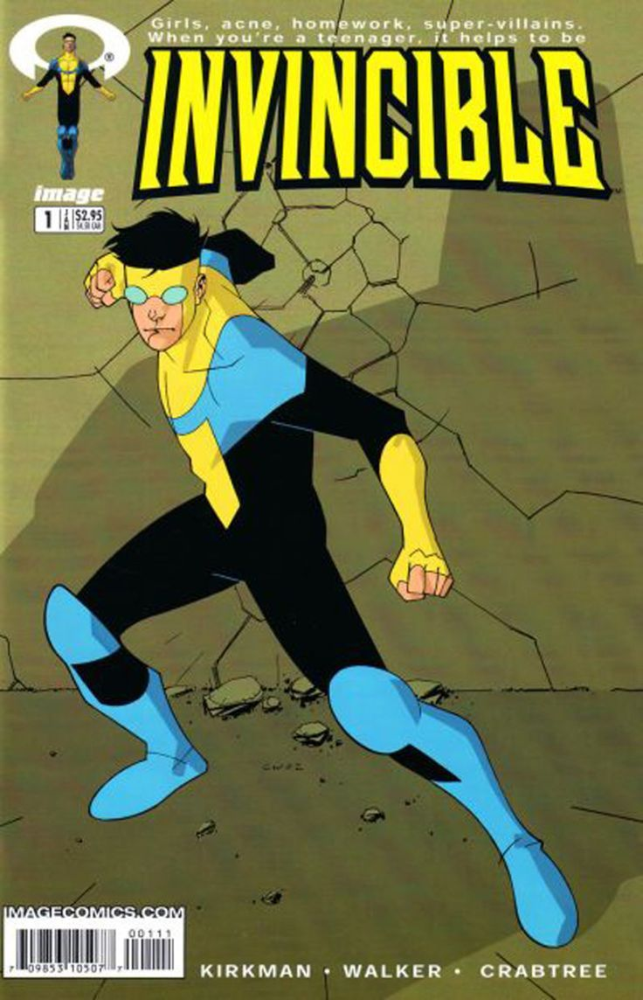

Invincible fue creado por Robert Kirkman
Robert Kirkman, el cerebro detrás de The Walking Dead, también es el creador de Invincible, una historia de superhéroes que lleva el género a lugares mucho más crudos, reales y sorprendentes. La serie comenzó en 2003 como un cómic publicado por Image Comics y rápidamente ganó notoriedad por su mezcla de acción, desarrollo emocional y giros brutales.
Kirkman buscaba hacer una historia que honrara las tradiciones de los cómics clásicos pero que también pudiera evolucionar con el tiempo. Así, Invincible se convirtió en una especie de anti-cómic tradicional, donde los cambios eran permanentes y los personajes enfrentaban consecuencias reales por sus acciones.
Mientras The Walking Dead explora el horror humano en un apocalipsis, Invincible examina los dilemas morales y éticos del poder en un universo con superhumanos, alienígenas y conflictos interplanetarios. Ambas obras comparten una visión: la brutalidad no es solo física, sino también emocional.
← Volver a curiosidades de Invincible